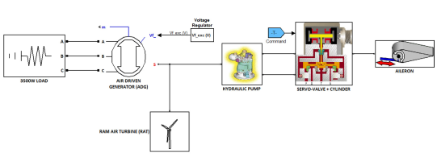
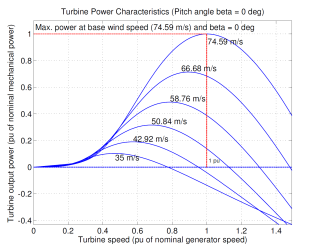

Hybrid emergency power system for more electrical aircraft:
Martin Gendrin (ETS), Jean-François Doyon (Cima+), François Pelletier (Bombardier Aeronautics), Louis A. Dessaint (ETS)
Description:
This demo presents a model of simulation of a RAT (Ram Air Turbine) system used as emergency power system in more electrical aircraft. It illustrates the use of the Simscape libraries to simulate a system composed of electrical, mechanical and hydraulic components.
The power system is composed from a wind turbine connected to an electrical synchronous generator. Its speed and voltage are regulated to 400Hz and 110V to fit with the airplane electrical main AC bus, and it supplies active loads up to 3500W. The shaft of the Turbine is also connected to a pump that supplies a hydraulic circuit linked through a servo valve to a cylinder. The motion of the rod is transformed into rotational movement on the axis of the Aileron. The angle controller makes sure that the deflection angle tracks a given reference by controlling the servo valve.

Functional representation of the complete system
This model contains:
- A wind turbine of 15kW with a base wind speed of 145 knots. A PD regulator acting on the pitch angle enables the control of the turbine speed necessary to regulate the electrical frequency of the synchronous generator to 400Hz.
- A synchronous generator of 15kVA with a nominal voltage of 110Vrms and a nominal frequency of 400Hz. A PI regulator enables the control of the voltage value to 110Vrms by regulating the filed voltage.
- An assembly of multiple electrical loads for a total of 3500W that is connected at the generator electrical ports.
- A variable displacement pressure compensated pump, which permits to maintain a preset output pressure of 1150 psi by adjusting the output flow. The pump nominal characteristics are a pressure of 3000 psi and an angular velocity of 8000 rpm.
- A servo valve controlled by a PD regulator fed from the angle error.
- A double acting hydraulic cylinder with an active area of 10cm² and a piston stroke of 30cm.
- A model of the aileron, which is a complex assembly composed of SimMechanics blocks.
In this simulation, the physical parts are discretized at a fixed sample time Ts=25us. The solver for the control parts is set at ode23tb, with a tolerance of 1e-4 and a maximal step of 50us.
The wind turbine power characteristics are available in the dedicated block, and are given in the plot bellow:

Wind turbine characteristics
Demonstration:
1. Run the aircraftRamAirTurbineAssembly_MultiDomain model for 6 sec. The following events will occur (cf Scopes):
Note: The selection of the accelerator mode decreases strongly the simulation duration.
- At t=0, the wind turbine delivers his nominal torque and speed. The pump pressure is set initially to 1050 psi. The electrical signals as well as the rest of the hydraulic and mechanical signals are set to zero.
- From t=0 to t=1s, the voltage controller will fully act to permit the establishment of the voltage rms value to 110Vrms, setting at the same time the electrical power produced from the synchronous generator. The deflection angle controller regulates the aileron at his zero position. The pump pressure increases rapidly to his preset value 1150 psi, and then the output flow of the pump will slowly increase to regulate the pressure at a constant value. The speed controller works to keep the generator speed at the nominal value 8000rpm.
- At t=1s, a positive reference of 10⁰ is set on the deflection angle regulator. As a result, the controller opens the servo-valve to deliver the necessary flow to the cylinder and then slowly closes it to enable a smooth tracking of the reference. At the same time, the loss of pressure due to the valve opening is compensated by the pump displacement. The total flow results from the flow necessary to the aileron motion and the one that compensate the pressure loss. The evolution of the pump power is fully absorbed by the wind turbine, and has no repercussions on the quality of the electrical power. The aileron controller achieves a good tracking of the reference in 650ms.
- At t=3s, a negative reference of -15⁰ is set on the deflection angle regulator. The system reacts similarly as in the last point. The valve is forced to motion in the other direction, the flow and pressure show the same curves but with greater amplitude. The impact on the electrical power can be neglected. The tracking of the reference is done in 1sec and is as accurate as before.